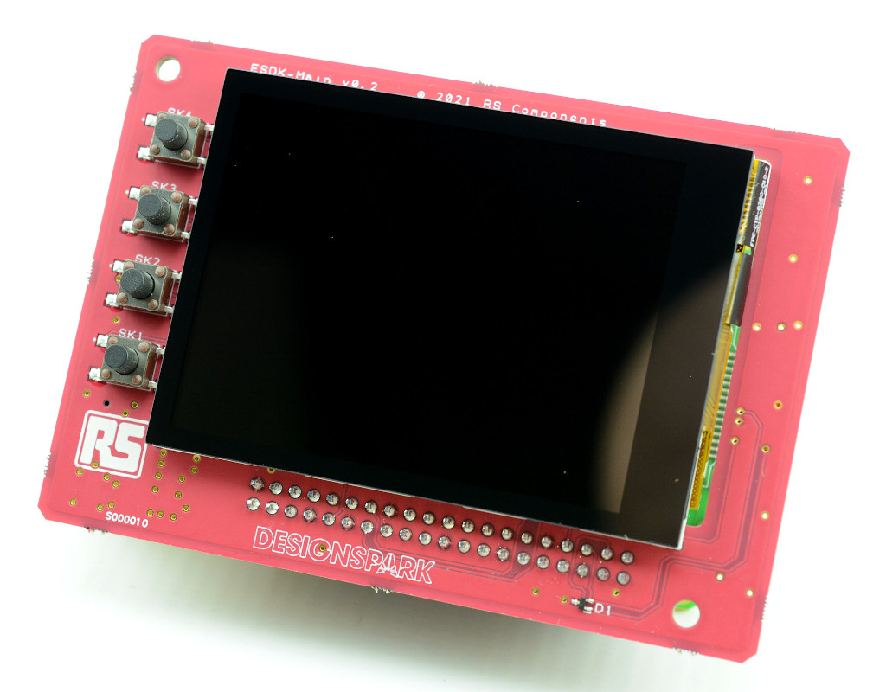
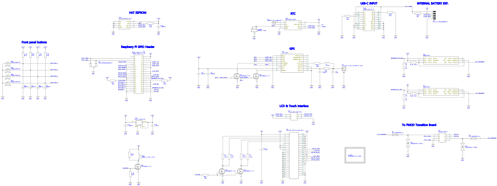
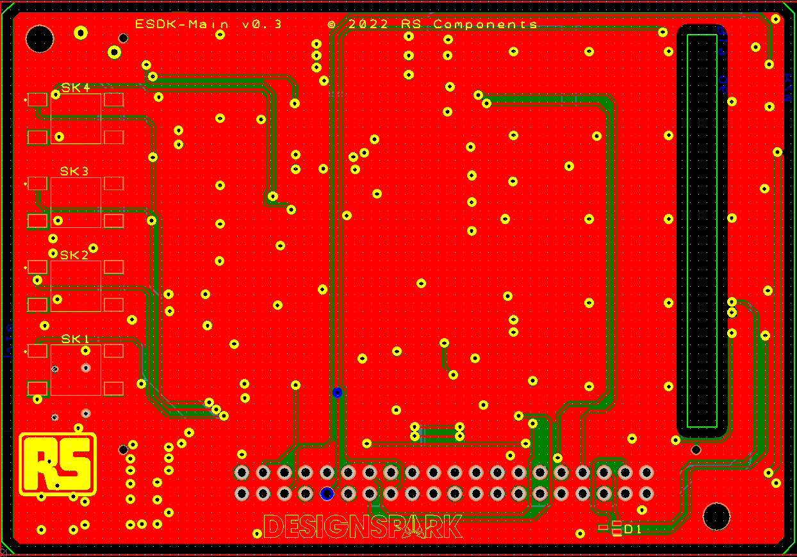

1.1.1. Main Board (Main)
1.1.1.1. Introduction
The Main board plugs into a Raspberry Pi SBC and provides:
Touch screen
Four physical buttons
Battery backed real-time clock (RTC)
Battery backed GPS
Buzzer (from board v0.3 onwards)
Sensor chain 3.3V and 5V power supply (from board v0.3 this is switched by MOSFETs under software control)
Connector for cable to Sensor Chain Adapter (PEA)
1.1.1.2. Schematic diagram
1.1.1.3. Theory of operation
The ESDK-MAIN board connects a number of peripherals to a Raspberry Pi P1 GPIO header including a 320x240 touchscreen over SPI and I2C, a battery-backed RTC connected over I2C, a GPS module connected over a UART (also supporting a 5V active antenna), four front panel buttons connected to GPIO lines, 3.3V and 5V sensor power rails switched by MOSFETs (from board v0.3 onwards), an on-board “HAT” EEPROM connected over I2C and USB-C for 5V power input.
The LCD, touchscreen, RTC and HAT EEPROM connect to I2C 0 on the Raspberry Pi, whereas the sensor string is connected to I2C 1 — this separation aims to avoid issues with the sensor string affecting operation of “system” devices. LCD backlight control is supported in software with further tweaks to the device tree overlay; GPIO 12 does support PWM to be able to adjust the brightness.
A 8-pin Molex PicoBlade connector is present for connection to the ESDK-PEA board that provides an external connector for the sensor modules.
For potential future use, a 5-pin Molex Pico-Lock connector can be used to enable battery expansion. This connector features the 5V rail inbound from the USB-C port, a 5V rail that heads out to the board plus a connection to I2C 0 for smart battery monitoring.
1.1.1.4. Board layout
1.1.1.5. GPIO Assignments
ESDK-MAIN Function |
Raspberry Pi GPIO |
|---|---|
TOUCH_RST |
4 |
TOUCH_INT |
17 |
GPS_RESET |
27 |
GPS_STBY |
22 |
GPS_PPS |
18 |
BUTTON_1 (closest to board bottom) |
5 |
BUTTON_2 |
6 |
BUTTON_3 |
13 |
BUTTON_4 (closest to board top) |
19 |
LCD_RST |
24 |
LCD_DC |
25 |
LCD_BL |
12 |
GPIO_1 |
20 |
GPIO_2 |
21 |
SENSOR_3V3_EN (only used on later boards) |
7 |
SENSOR_5V_EN (only used on later boards) |
16 |
BUZZER (only used on later boards) |
26 |
The touchscreen I2C interface is connected to I2C 0
The module I2C interface is connected to I2C 1
The LCD is connected to SPI 0
The GPS is connected to UART “serial0” which is the hardware UART on the Raspberry Pi